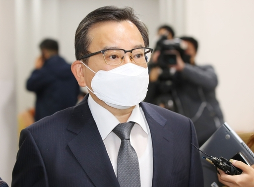

김 전 차관, 사업가 최모씨로부터 받은 차명휴대전화 사용대금의 대가성 인정된다고 판단한 게 결정적

김학의 전 법무부 차관이 28일 열린 항소심 선고 공판에 출석하기 위해
서울 서초구 서울고등법원 법정으로 향하고 있다. 연합뉴스
별장 성접대 의혹과 수억원대 뇌물수수 혐의로 재판에 넘겨져 1심에서 무죄를 선고받은 김학의 전 법무부차관(64)이 2심에서는 유죄를 선고받고 법정구속됐다.
무죄에서 유죄로 바뀌게 된 데에는 김 전 차관이 사업가 최모씨로부터 받은 차명휴대전화 사용대금의 대가성이 인정된다고 판단한 것이 결정적이었다. 1심에서는 뇌물로 볼 수 없다는 판단이 나왔었다.
서울고법 형사1부(부장판사 정준영 송영승 강상욱)는 28일 김 전 차관에게 무죄를 선고한 원심을 파기하고 징역 2년6개월의 실형과 벌금 500만원을 선고했다.